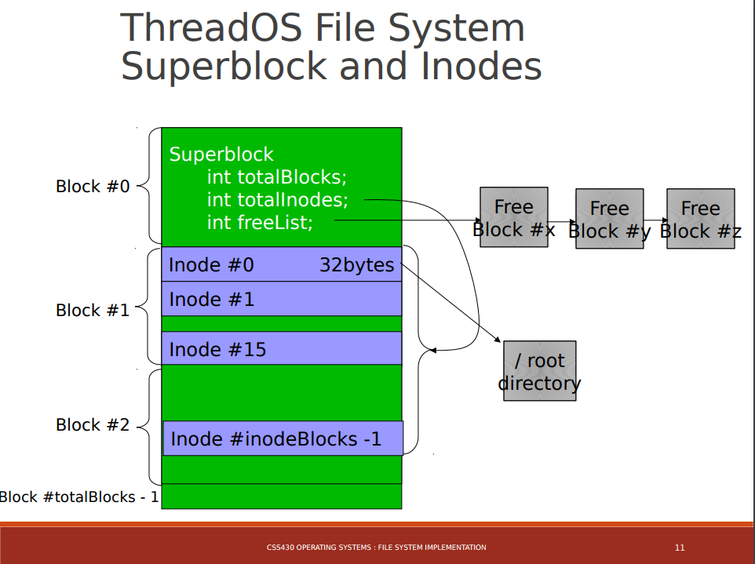

Our final project for CSS 430 Operating Systems was to design and develop the file system for ThreadOS, a virtual CLI OS built on Java. It was challenging, fun and as usual in this course made me appreciate the
low level operations that hum away to make computing possible.
From the assignment page:
In this project, you will build a Unix-like file system on the ThreadOS. Through the use of the file system, user programs will now be able to access persistent data on disk by way of stream-oriented files rather than the more painful direct access to disk blocks with
rawread()andrawrite().
Many aspects of ThreadOS are designed to emulate Unix as far as underlying implementation. The "disk" in this case is simply a serialized file sitting in the root ThreadOS directory, DISK. Up until now,
any need for disk operation in our projects would read/write from the disk file raw, by hitting disk blocks directly.
This project is significantly larger than the previous ones, even against assignments in other courses. The documentation is considerable, relatively, and not just because there happened to be more files.
Here are some bits from the design and documentation for context:
This program describes the file system for ThreadOS, which is used to stream files to/from
DISKwithout requiring the manual use ofrawread()andrawwrite(). The file system provides user threads with the implementation for system calls that enable format, open, read, write, seek, delete and getsize of files.
ThreadOS has only one single-level directory. Every user thread has its own thread control block,TCB, which records files opened by its associated thread. These entries point to a system wideFileStructureTablewhich maintains the seek pointer (internal file position) as well as the inode number.
Every file has an Inode, which is a data structure that records information about the file. It contains 11 pointers that point directly to 11 blocks (for the file data), as well as a single indirect pointer which points to a block that is full of pointers pointing to more bonafide blocks (for the file data). This “block of pointers” pointed to by the single indirect pointer holdsBLOCK_SIZE / POINTER_SIZEpointers, or in this case512 / 4 = 128pointers (blocks).Inodealso maintains the file size, a flag indicating whether the Inode is in use, plus a count of how many times the file is open.
The firstDISKblock, block 0, is theSuperBlock. This block is managed by the OS and is inaccessible by user threads. It maintains information about total blocks on disk, total inodes, as well as the block number that is the head of the free block list.
Files collect in Directory. Each entry contains filename and inode number. The directory itself is considered a file with its own inode (inode 0) located in the first 32 bytes of block 1.Directoryis instantiated on boot by reading from these bytes and is saved on quit by writing back the bytes.
Since every user thread has its own file descriptor table, the system maintains aFileStructureTablewith aFileTableEntryper file. These entries contain the file’s seek pointer and links to the file’s inode. Also, when user threads spawn children, initially the parent copies its TCB and file descriptor table to its children, therefore increasing the number of references to the same particularFileTableEntryfound within theFileTableEntry.
Perhaps what makes this project challenging are all the moving parts, mainly:
DISK. This is a virtual hard drive, that is, a file worth 1000 blocks of 512 bytes each.Kernel is already wired to rawread/write to and from this file, that is, hit individual bytes directly.DISK blocks. These blocks are tracked via an Inode data structure, which holds pointers to the data blocks of a file.
Ultimately everything depends on the Inode sub-structure. In addition to some file meta data (attributes), there exists a series of pointers. Each pointer will point to
a block of bytes holding a fragment of file data on DISK. The interesting bit is that only about 11 pointers will directly map to some block number.
In many cases 11 blocks are not enough to hold all file data, and that's where indirect pointers come in. In this scheme, instead of pointing directly to a data block, an indirect pointer will point to a block full of pointers. Those pointers, in turn,
point to data blocks. This idea can be implemented recursively, that is, an indirect pointer can point to a block of more indirect pointers, which then point to data blocks.
In this way, inodes can be of fixed size and have their theoretical maximum addressable file sizes. Suppose that a file needs 25 blocks. It could address the first 11 directly (at 4 bytes each), then address all the remaining 14 with just one more 4 byte pointer.
This works because it can use the indirect block, which will hold up to BLOCK_SIZE / 4 pointers to data blocks.
Another key idea was visualizing the layout of DISK. There's block 0, the superblock (metadeta), then a contiguous set of inodes that can be allocated as needed, then an initially contiguous unallocated chunk of memory that runs until the end of the
address space. From here, files can be allocated in a non-contiguous manner thanks to the linking abilities that are inherent to Inode.
Here's the way DISK is structured in ThreadOS:

I should mention that Inode can allocate a new block via SuperBlock's free list, which maintains a pointer a the first available unallocated block. Every unallocated block reserves its first 4 bytes as pointer to the next free block.
It was exciting to run various benchmarks on this file system. The unit tests included different read/write schemes (sequential, random), testing of file system functonality like opening and closing files within a directory, and verifying the written data comes back as
unchanged when read using abstracted (by filename) methods.
This being a final project for 430 prohibits from sharing any code, snippets or otherwise, but nonetheless this was one of the hardest yet most rewarding projects I've had. Being a group project also have me some more practice using git. It's fun seeing terms from my OS
class show up here and there as I'm poking around in Linux or Windows.
This was the first class I've taken that's gotten this low-level (even though it was simulated with the JVM).
422, Computer Hardware, is up next.
A.